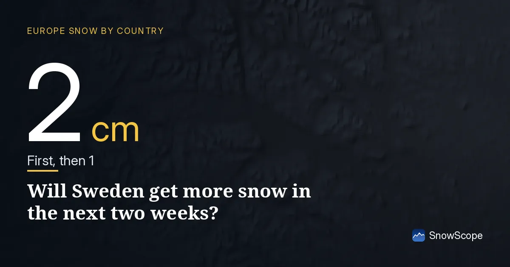

Will Sweden get more snow in the next two weeks? First 2 cm, then 12 cm
Will the snow keep coming to Swedish mountains over the next two weeks? The forecast shows a quiet start with just 2 cm of new snow by the end of week one, then a heavier spell in week two with up to 12 cm falling between 30 November and 6 December.
See the live snow forecast for Björkliden in the SnowScope appSnow depth, powder alerts and the 3D map, free.
Two weeks ahead: a slow start, then relief
Right now, 96 percent of Sweden's region is snow-covered, and that white expanse will stay put. But the water delivered from the sky will slow. In the next seven days, we expect no more than 6 cm of fresh snow to fall. That matters for water storage: shallow new snow in early winter is partly lost to sublimation—water vapour that escapes to the air—before it can be firmed by wind or compressed by its own weight.
The pattern changes after day seven. Week two, running from 30 November to 6 December, brings a jump to 12 cm possible. That is real accumulation. It will add measurable depth to the snowpack and boost the water equivalent stored in the mountains, especially at high elevations where temperatures stay cold enough to preserve it through spring melt.
| Resort | Snow depth | New snow, 72 h | Coming, next days | Top |
|---|---|---|---|---|
| Björkliden | 136 cm | 6 cm | 3 cm | 933 m |
| Abisko | 136 cm | 3 cm | 1 cm | 902 m |
| Ålåsens Skidbacke | 37 cm | 2 cm | 0 cm | 502 m |
| Almåsa | 35 cm | 2 cm | 0 cm | 702 m |
| Orsa Grönklitt | 34 cm | 2 cm | 0 cm | 560 m |

What is happening right now
Today, 22 November, marks the middle of a wet spell. In the last 72 hours, up to 13 cm fell across parts of the country, with the heaviest snow hitting high ground above 1,000 metres. Tomorrow, 23 November, will be the snowiest day of the immediate week, adding around 5 cm. After that, the flux weakens: by 25 November, we expect only 6 cm more to fall in total.
Three days ago, on 19 November, Sweden had 51,590 km² less white cover than today. The past week has been generous in the north: Björkliden, the depth leader, holds 136 cm at 933 metres. Abisko sits level with it at 136 cm at 902 metres. These are both measured station values and represent actual snow on the ground right now.

The trend: steady growth in coverage
One week ago, on 16 November, snow covered only 256,990 km² of the region. By today, that figure has grown to 314,500 km², an increase of 57,510 km² in seven days. This marks a consistent upward trend: each day since mid-November has added white area or held it steady. The growth reflects new snow falling on higher ground where it sticks, and cold air gradually pushing it lower.
That peaked the recent pulse. Since then, the daily increments have eased, but the trend remains solidly northward and upward on the calendar.
Where the depth sits across elevations
The snowpack divides sharply by height. Below 500 metres, mean depth is only 12 cm and coverage stands at 95 percent—the lower zones are still largely bare or thinly covered. Between 500 and 1,000 metres, depth rises to 15 cm with complete cover. Above 1,000 metres is where the real storage begins: from 1,000 to 1,500 metres, the mean is 41 cm across full cover. At 1,500 to 2,000 metres, mean depth reaches 66 cm at 100 percent coverage.
This vertical stack is exactly what a hydrologist watches: the high peaks are already reservoirs. As winter deepens and new precipitation falls, that upper band will deepen further. By January and February, when the freeze-thaw cycle intensifies, this stored snow water will begin its slow journey downslope and into streams and groundwater.
Compared to past winters
Three of Sweden's resorts are running above their average for this date. Almåsa and Orsa Grönklitt both sit at 109 and 200 percent of normal respectively, though Orsa's normal is very low, so the comparison is modest. Abisko, at 107 percent of usual, also shows a healthy head-start. Björkliden and Ålåsens Skidbacke are closer to their long-term averages. Overall, the country is tracking 107 percent of median normal, suggesting this early winter sits slightly ahead of past seasons so far.
Practical outlook
For water planners and hydrologists, the signal is clear: accumulation continues but will stall in week one before resuming in week two. High slopes above 1,500 metres should see steady deepening through December, with week two's 12 cm pulse being the most significant event in the next fortnight. Lower resorts and thin-snow zones will remain vulnerable to melt or bare ground if temperatures spike.
Tips for skiers
- Watch tomorrow, 23 November: it will be the snowiest day of the next week with 5 cm possible. Plan travel or outdoor work around this window.
- High ground above 1,500 metres is now your storage zone: 66 cm mean depth with full cover means it will hold fresh snow and preserve it through the thaw cycle.
- Week two (30 November to 6 December) is when real accumulation happens. If you manage water resources, budget for 12 cm of potential input then; week one adds little.
- Lower elevations below 500 metres remain risky: only 12 cm mean depth and 95 percent cover. Rocks or bare patches are still likely there, so check terrain carefully.
- Check the latest avalanche bulletin if you plan to travel to or ski above 1,000 metres; fresh snow settling on the existing pack can alter stability.
About these numbers
Resort snow depths are the deepest snow on the resort's upper slopes on the date shown; they are estimates for an area, not a measurement at one point. Forecasts can change. Always read the official avalanche bulletin before going off-piste.
Cite this report
For research, teaching or the press: the numbers and charts are free to reuse under CC BY 4.0 with this citation.
SnowScope (2026), Will Sweden get more snow in the next two weeks? First 2 cm, then 12 cm, https://snowscope.app/blog/en/2026/11/sweden-two-week-snow-outlook-22-november-2026.html, accessed 2026-11-22
SnowScope (Atlas Labs). (2026, November 22). Will Sweden get more snow in the next two weeks? First 2 cm, then 12 cm. SnowScope snow reports. https://snowscope.app/blog/en/2026/11/sweden-two-week-snow-outlook-22-november-2026.html
BibTeX
@misc{snowscope2026swedentwoweeksnowoutlook,
author = {{SnowScope (Atlas Labs)}},
title = {Will Sweden get more snow in the next two weeks? First 2 cm, then 12 cm},
year = {2026},
month = nov,
howpublished = {\url{https://snowscope.app/blog/en/2026/11/sweden-two-week-snow-outlook-22-november-2026.html}},
note = {Published 2026-11-22 20:35 UTC; accessed 2026-11-22}
}· CC BY 4.0 · Methods, data and tools →
Björkliden: snow and temperature by height, this winter vs last (tools) →
Follow Björkliden
Free: a message when fresh snow is coming, and the forecast every morning.
More snow reports

Tornik on Zlatibor had up to 39 cm on its upper slopes on 15 November 2026; by Wednesday it had melted. Kopaonik barely turned white. The week day by day and what comes next.

Savin Kuk above Žabljak picked up 22 cm of snow from 13 to 19 November and still has 6 cm today. Kolašin 1450 and 1600 are bare. The week day by day, and the next chances.

From 13 to 19 November 2026 Slovenia got the most snow and kept it; Serbia and Croatia had a deep but short white weekend; Montenegro only on Durmitor; Bulgaria almost none. The ranking, with links to each country report.